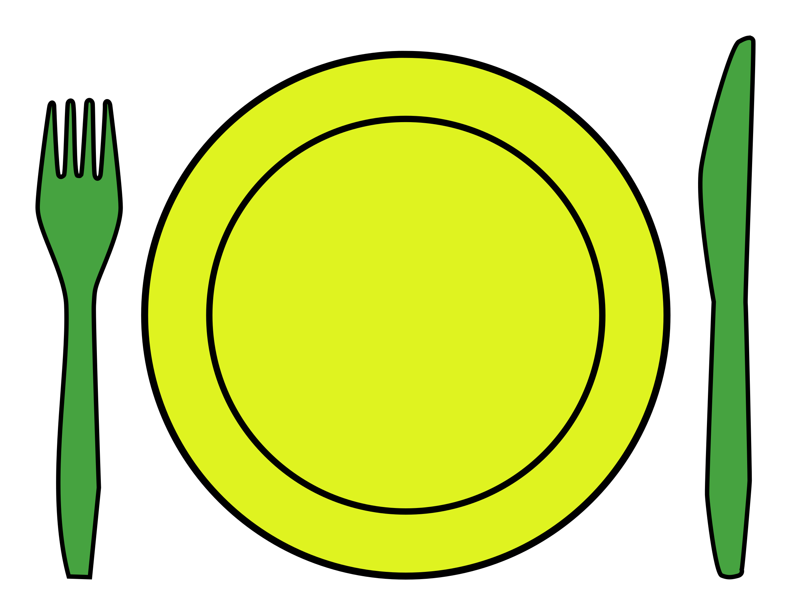

✕
A-Z Travel Guide
About
Join in!
World From Home
A new way to travel
See
International films and artwork, old and new
Listen
Discover new sounds, from music to podcasts

Taste
Recipes from around the globe
The Map
A-Z Travel Guide
Top